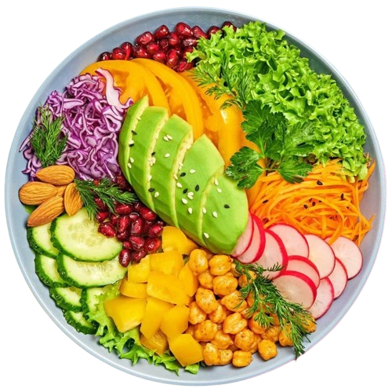

Back to Home

Pasta
Vegan dishes celebrate plant-based ingredients, delivering vibrant flavors and nutritious
meals without animal products. From hearty curries and refreshing salads to innovative
meat alternatives, vegan cuisine offers endless possibilities for those seeking ethical
and health-conscious dining.
Prep Time: 10-30 min
Cook Time: 15-40 min
Total Time: Varies
0 Likes
Ingredients
- Varies by dish (tofu, chickpeas, lentils, vegetables, plant-based milk, spices)
Preparation
- Follow the recipe for specific vegan dishes (e.g., stir-fries, curries, salads).
- Use plant-based alternatives for cream, cheese, or meat as needed.